Web development on Windows
Microsoft offers a variety of resources for web developers, including new tools and features supporting web development using Windows. This guide covers many of the tools available to make Windows your ideal environment to develop on for the web. For a list of APIs, see APIs for web development.
WebView, DevTools, PWAs
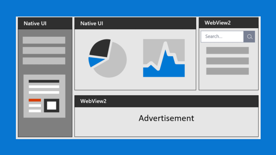
WebView 2
Embed web content (HTML, CSS, and JavaScript) in your native applications with Microsoft Edge WebView2.
Download WebView 2
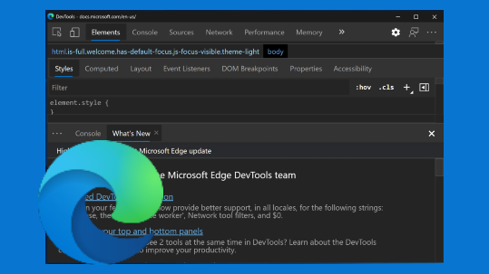
Microsoft Edge DevTools
Microsoft Edge Developer Tools are a set of inspection and debugging tools built directly into the Microsoft Edge browser.
To open DevTools, with Microsoft Edge in focus:
- Right-click then Inspect
- Select the
F12key Ctrl+Shift+i
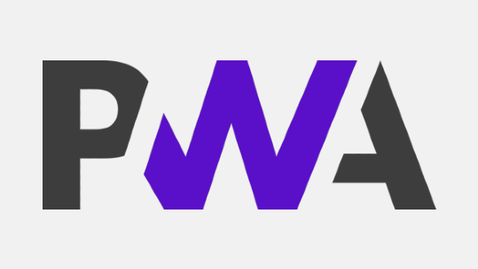
Progressive Web Apps on Windows
Progressive Web Apps (PWAs) provide your users with a native, app-like experience customized for their devices. They are websites that are progressively enhanced to function like native apps on supporting platforms.
Get started with PWAs
Microsoft Edge browser
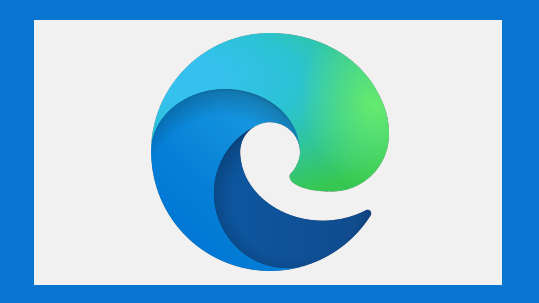
Microsoft Edge for Developers
The new Microsoft Edge is based on Chromium to create better web compatibility and less fragmentation of underlying web platforms. Released January 15, 2020, it is supported on Windows, macOS, iOS, and Android.
Install the new Microsoft Edge
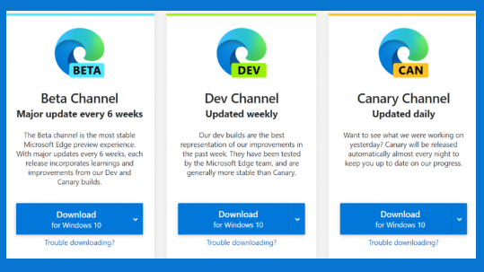
Microsoft Edge for Business
Microsoft Edge is based on Chromium and offers enterprise support. Get step-by-step guidance on how to configure and deploy the multiple channels available.
Download Microsoft Edge channel
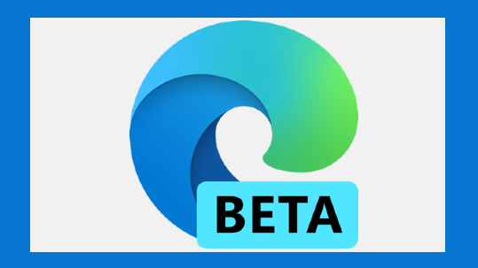
Microsoft Edge Insider
We're building something new for Microsoft Edge every day. Learn about our recent progress and how you can get involved.
Download Microsoft Edge Beta version
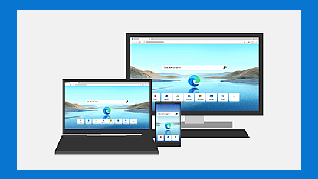
Microsoft Edge Support
Get help with customizing your browser, adding extensions, tracking prevention, troubleshooting, and more.
Get help with Microsoft Edge
Debugging, Testing and Accessibility
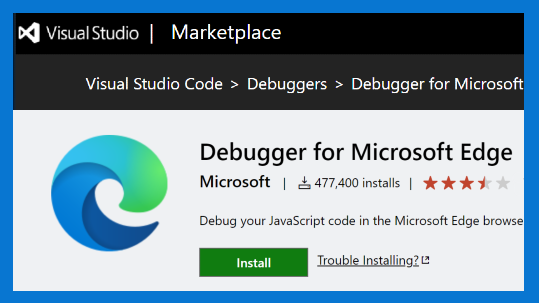
Microsoft Edge Tools for VS Code
Without leaving Visual Studio Code, use Microsoft Edge DevTools to connect to an instance and view the runtime HTML structure, change layouts, styles (CSS), read console messages, and view network requests.
Install Microsoft Edge Tools for VS Code
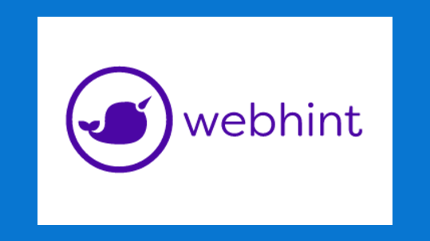
WebHint for Accessibility
A customizable linting tool that helps you improve your site's accessibility, speed, cross-browser compatibility, and more by checking your code for best practices and common errors.
Install VS Code extension
Install browser extension
Install CLI
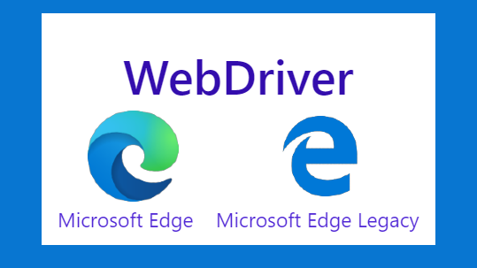
WebDriver
Close the loop on your developer cycle by automating testing of your website in Microsoft Edge with Microsoft WebDriver.
Install WebDriver
Visual Studio code editors

VS Code
A lightweight source code editor with built-in support for JavaScript, TypeScript, Node.js, a rich ecosystem of extensions (C++, C#, Java, Python, PHP, Go) and runtimes (such as .NET and Unity).
Install VS Code

Visual Studio (IDE)
An integrated development environment that you can use to edit, debug, build code, and publish apps, including compilers, intellisense code completion, and many more features.
Install Visual Studio
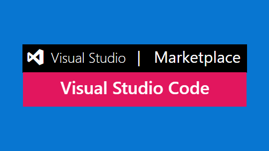
VS Code Marketplace for Extensions
Explore the many different extensions available to customize your Visual Studio Code editor.
Install Extensions
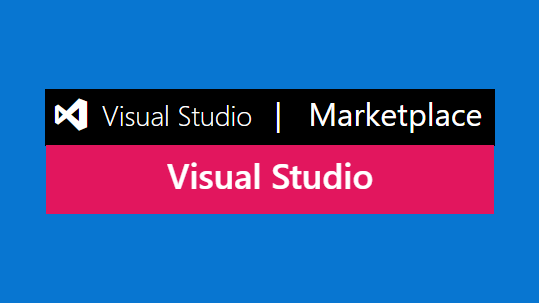
Visual Studio Marketplace for Extensions
Explore the many different extensions available to customize your Visual Studio integrated development environment.
Install Extensions
WSL, Terminal, Package Manager, Docker Desktop
Windows Subsystem for Linux
Use your favorite Linux distribution fully integrated with Windows (no more need for dual-boot).
Install WSL
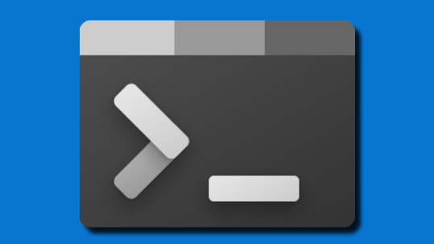
Windows Terminal
Customize your terminal environment to work with multiple command line shells.
Install Terminal
Windows Package Manager
Use the winget.exe client with your command line to install apps on Windows or submit your own packages to Windows Package Manager.
Install Windows Package Manager winget client
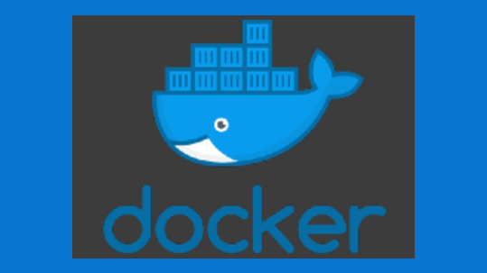
Docker Desktop for Windows
Create remote development containers with support from Visual Studio, VS Code, .NET, Windows Subsystem for Linux, or a variety of Azure services.
Install Docker Desktop for Windows
ASP.NET, Typescript, .NET MAUI
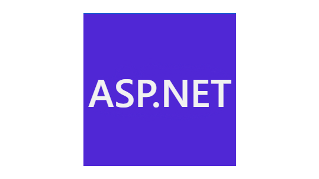
ASP.NET
A cross-platform framework for building web apps and services, Internet of Things (IoT) apps, or mobile backends with .NET and C#. Build rich interactive web UI with Blazor. Use your favorite dev tools on Windows, macOS, and Linux. Deploy to the cloud or on-premises. Run on .NET.
Install ASP.NET
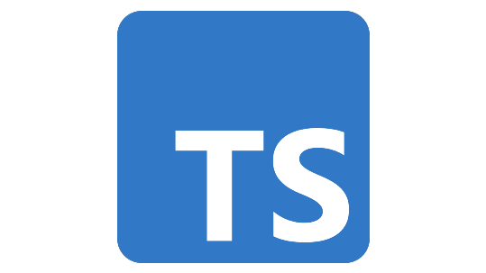
Typescript
TypeScript extends JavaScript by adding types to the language. For example, JavaScript provides language primitives like string, number, and object, but it doesn’t check that you’ve consistently assigned these. TypeScript does.
Try in your browser
Install locally
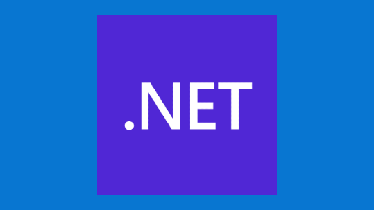
.NET MAUI
.NET Multi-platform App UI (.NET MAUI) lets you build native apps using a .NET cross-platform UI toolkit that targets the mobile and desktop form factors on Android, iOS, macOS, Windows, and Tizen.
Install .NET MAUI
Open Source contributions
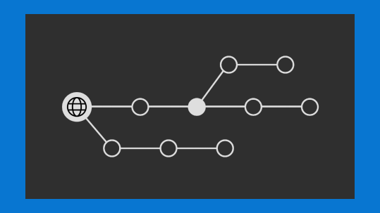
Open Source at Microsoft
Thousands of Microsoft engineers use, contribute to and release open source every day. Popular projects include Visual Studio Code, TypeScript, .NET, and ChakraCore.
Get involved
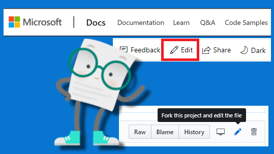
Contribute to the docs
Most of the documentation sets at Microsoft are open source and hosted on GitHub. Contribute by filing issues or authoring pull requests.
Learn how
Cloud development with Azure

Azure
A complete cloud platform to host your existing apps and streamline new development. Azure services integrate everything you need to develop, test, deploy, and manage your apps.
Set up an Azure account
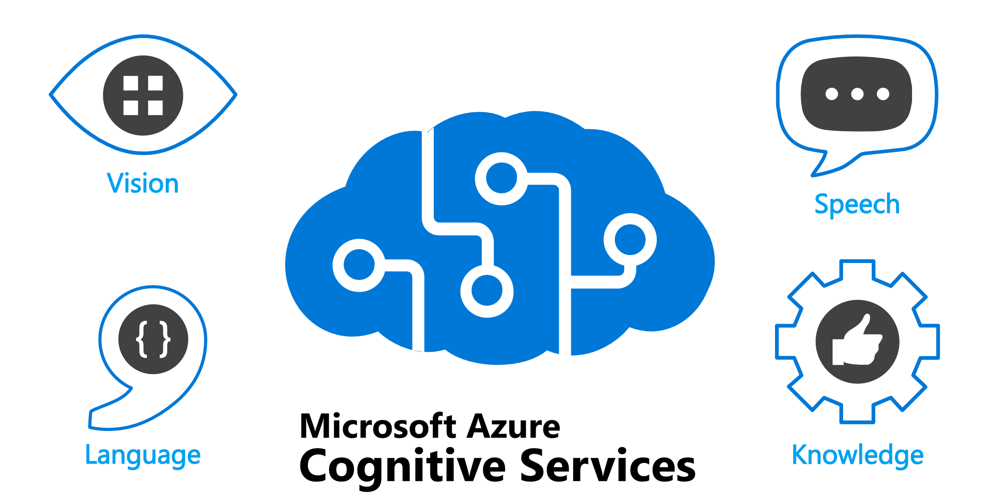
Azure Cognitive Services
Cloud-based services with REST APIs and client library SDKs available to help you build cognitive intelligence into your applications.
Try Cognitive Service
Browse Azure products
Azure offers a huge variety of products and services - take a look at through the documentation or see the Azure product descriptions and pricing.
Set up an Azure account
Additional resources
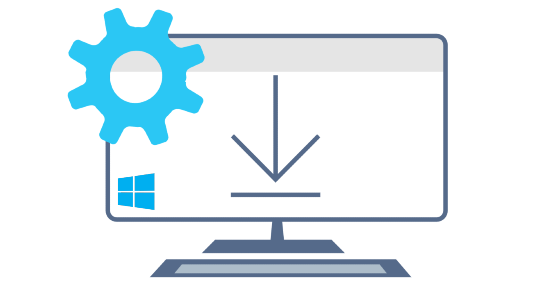
Set up your development environment on Windows
Get help setting up your development environment to work with Python, NodeJS, C#, C, C++, build Android apps, build Windows desktop apps, build Docker containers, run PowerShell scripts, and more.
Get started
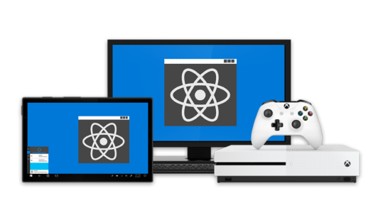
React Native for Desktop
Bring React Native support to the Windows SDK and macOS 10.13 SDK. Use JavaScript to build native Windows apps for all devices supported by Windows including PCs, tablets, 2-in-1s, Xbox, Mixed reality devices, etc., as well as the macOS desktop and laptop ecosystems.
Install React Native for Windows
Install React Native for MacOS
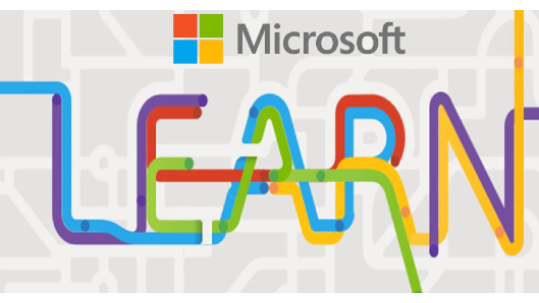
Microsoft Learn courses related to web development
Microsoft Learn offers free online courses to learn a variety of new skills and discover Microsoft products and services with step-by-step guidance.
Start Learning
Transitioning between Mac and Windows
Check out our guide to transitioning between a Mac and Windows (or Windows Subsystem for Linux) development environment.